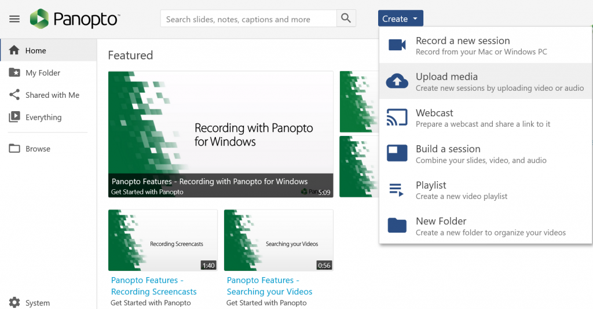
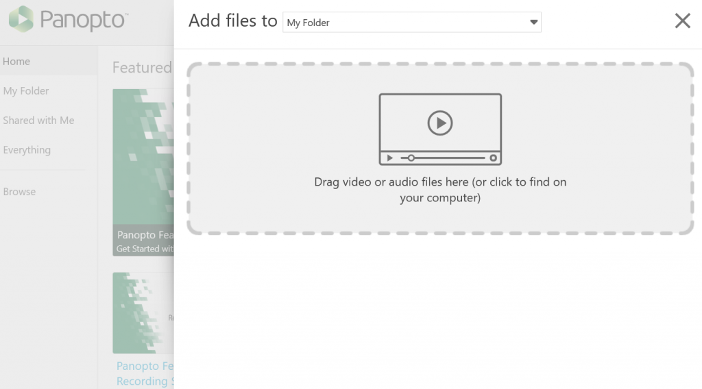
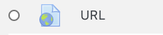

Did you know that Panopto is a video- and an audio-streaming service, like YouTube
or Vimeo? In addition to using it to record lectures and presentations
at home or in classrooms,
you can also upload audio and video created or recorded elsewhere into Panopto
in order to share them with others.
-
This option is only available in the Panopto web portal (https://brynmawr.hostel.panopto.com),
not the desktop app used for recording.
-
Panopto supports major media file formats, including MP3, MP4, AVI, MOV, and ASF.
See Supported File Types
for details.
To upload an audio or video file to Panopto:
-
Log into the Panopto web portal by one of the following methods:
-
Go to https://brynmawr.hosted.
-
Log into a Moodle course where you are a Teacher role, chlick on the Course Settings
link in the Panopto block, and then exit the course settings tab.
-
Click the dark blue Create button, and choose Media
from the drop-down menu, as shown below.

-
Click the Add Files to drop-down menu and choose the folder where you want to place your files.

-
Upload files by either:
-
Dragging them into the box labeled Drag video or audio files here... OR
-
Clicking on that box, browsing for files on your comptuer, selecting them and clicking Open
-
A check mark will appear by each file when it has finished uploading; Panopto will alert you when it is
safe to close the window.
Note that Panopto may continue to process media for several minutes after the upload finished. This is normal,
and time required depends on the recording length/file size, the media formatting and the server load. Once the
processing is complete, you can generate a shareable link
to add to a Moodle site or web page.(Note: you can also copy or move the video)
to the panopto folder for a Moodle course, and it will appear in the Panopto block in that course).
To add the link to your Moodle site:
-
On your Moodle course page, click the Turn Editing On button located toward the top right of the page.
-
Locate where you would like to place the link and select Add an activity or resource.
-
From the menu that comes up, choose the URL activity and then click Add

-
In the new window that appears, you will be able to give your URL a Name. The name is the text that will
be displayed linking to your video. For example, you can title your link "Firm clip for Week 1."

-
Next, paste your link into the External URL.
-
Click Save and return to course. Your video is not available through this link to all users on your Moodle
course page.
-
To confirm your link is working correctly, open your link in a new incognito tab or browser.
Please Note auto captions will be generated for files that are not already captioned.
However, these need to be checked and edited for accuracy before using on a website or in a course.
For more information, please check out Captioning in Panopto.